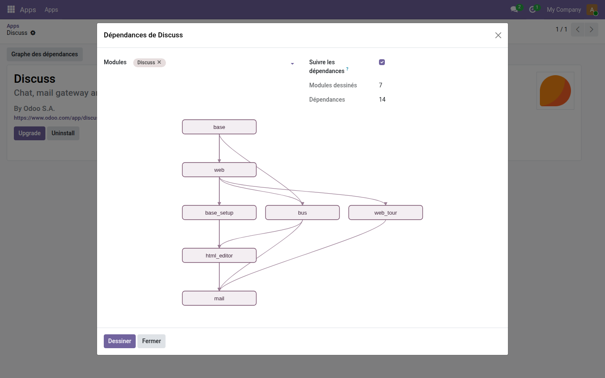

Graphe des dépendances des modules
Voyez d'un coup d'œil ce qui tient quoi dans votre base, en SVG.
La liste des applications dit ce qui est installé. Elle ne dit pas ce qui tient quoi : quel module s'effondrerait si on désinstallait celui-là, combien de couches séparent une personnalisation du cœur, ni pourquoi une mise à jour en entraîne douze autres.
Ce que ça apporte
- 🗺️ Un étage par profondeur — chaque module se place à l'étage de sa plus longue chaîne de dépendances, pour qu'aucune flèche ne remonte.
- 🎯 Depuis n'importe quel module — un bouton sur sa fiche dessine son propre arbre, sans passer par la base entière.
- 🖥️ Dessiné par le serveur — aucune bibliothèque tierce, aucun appel réseau, rien à charger : du SVG produit en Python.
- 📏 Il refuse l'illisible — au-delà de soixante modules, le graphe le dit et demande de restreindre plutôt que de rendre une image inexploitable.
Aperçu réel
Ce dont dépend Discussion
Sept modules, quatorze dépendances : base en haut, mail tout en bas, et entre les deux les couches qu'il faudrait retirer avant lui.

Pourquoi l'adopter
- Un audit de base, une reprise de projet, une désinstallation risquée : trois moments où ce dessin remplace une demi-journée de lecture de manifestes.
- Une dépendance hors du périmètre est écartée du dessin : jamais de flèche vers un nœud absent.
- Module gratuit, licence LGPL-3 — aucun abonnement, aucune dépendance extérieure.
Pour aller plus loin
Comprendre son instance passe aussi par ses journaux : qui s'est connecté, qui a modifié quoi, ce qui est sorti de la base, quelles tâches planifiées échouent. La gamme OdooSkills compte une famille complète d'outils d'exploitation. Catalogue complet : apps.odooskills.com.
Licence LGPL-3 — compatible Odoo 19.0 Community et Enterprise. Support : support@odooskills.com.